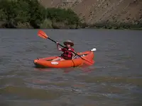
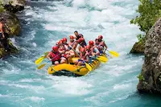
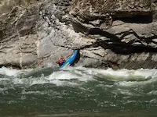
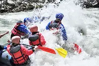
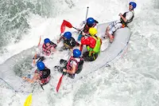

At Whitewater Wonders, our purpose is to connect people with the thrill of natures power through exhilarating rafting adventures. Our mission is to deliver unforgettable experiences that combine excitement, safety, and a deep appreciation for the great outdoors. Guided by our creed, "Adventure flows where courage grows," we aim to inspire everyone to embrace challenges and create lasting memories. Our motto: *"Ride the Rapids, Live the Adventure.
WHITEWATER RAFTING

History
Founded in 1995, Whitewater Wonders began as a small rafting outfitter on Colorados rivers. Over the years, weve grown into a trusted name, sharing the thrill of whitewater adventures with thousands of adventurers.
Adventure Awaits You




